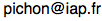

CURRICULUM VITAE
Christophe Pichon

Bibliographic information
Date of Birth : born 7 May 1968, Rennes (Ille-et-Vilaine) France;
Phone/Email/Web : 33 (0)1 44 32 81 35  http://www.iap.fr/users/pichon/
Education
2020- Research Director DR1 IAP/UMR 7095
Spring 2018 SUPA Visiting scholar, Scottish University Physics Alliance, Edinburgh .
Autumn 2015-20 KIAS Visiting scholar, Korean Institute of Advanced Studies, Seoul .
Spring 2015 CNRS Overseas Visiting fellow, Institute of Astronomy, Cambridge .
Autumn 2013 Sackler Visiting fellow, Institute of Astronomy, Cambridge .
2011- 2020 Research Director DR2 IAP/UMR 7095
2010-11 Merton College Visiting fellow, Merton College .
2009- 2010 Leverhulme visiting professor, Merton College , Oxford Astrophysics .
2004- 2008 Researcher, CR1, CNRS, UMR 7095, Institut d’astrophysique de Paris.
Head of research group “Universe & large scale structures”, IAP.
1998-2001 Junior Researcher, CR2, CNRS, UMR 7550, Observatoire de Strasbourg.
1995-1998 Postdoc, Basel Observatory.
1993-1995 Postdoc, Canadian institute of theoretical astrophysics (CITA).
1990-1993 Ph.D. (Theorical Astronomy) University of Cambridge & Clare College, Cambridge, U.K.
Ph.D supervisor: D. Lynden-Bell. topic: “Dynamics of self-gravitating discs.”
1988-1990 Master II: Astrophysique et Techniques Spatiales at Meudon.
Master I & Magistère of the Ecole normale superieure de Lyon
1986-1988 “Classes préparatoires mathématiques supérieures et spéciales”. Paris & Nantes.
Distinctions
2015-2024 KIAS Scholar professorship, Seoul
2015 CNRS overseas fellowship, Cambridge
2013 Sackler Fellowship, Cambridge
2010 Merton visiting professorship, Oxford
2009- 2010 Leverhulme professorship, Oxford
1992 Knight Prize (University of Cambridge) “Bars in galaxies: a dynamical formation”
1990-1996 Isaac Newton Studentship, British Council Studentship, Bourse Erasmus,
Bourse MRT, NSERC Fellowship, Swiss National Fund Fellowship.
1988 Ecole normale de Lyon (63rd)
Supervision
I have (co-)supervised nineteen PhD students, eleven of whom have now permanent positions.
• D. Aubert : “Étude des flux cosmologiques au travers de la sphère du viriel Galactique” PDF,
• E. Rollinde : “La physique du milieu intergalactique" PDF, with P. Petitjean,
• A. Siebert : “Structure et dynamique des disques de la Galaxie” PDF, with O. Bienaymé,
• P. Ocvirk : “Évolution chemo-spectro-dynamique des disques galactiques” PDF,with A. Lançon,
• B. Aracil : “Étude du milieu intergalactique à l’aide des raies d’absorptions” PDF,with P. Petitjean,
• S. Caucci : “La topologie du Milieu intergalactique” PDF, with P. Petitjean,
• T. Sousbie : “Le Squelette de l’univers, un outil d'analyse des grandes structures” PDF,with H. Courtois,
• J. Thiébaut :"Reconstruction de champs magnetiques par analyse de la polarisation du rayonnement synchrotron", PDF,with S Prunet,
• C. Gay : "Le Squelette des Grandes Structures de Univers" PDF, with D. Pogosyan
• S. Codis : De la cosmologie a la formation des galaxies : que nous apprennent les grandes structures de l'Univers? PDF, with D. Pogosyan
• C. Welker : How gas inflows and mergers shape galaxies in their cosmic environment. PDF, with J. Devriendt and Y. Dubois
• J.B Fouvry: Secular evolution of self-gravitating systems over cosmic age PDF,with J. Binney
• C. Laigle: Observational and theoretical constraints on galaxy evolution at high redshift PDF, with H McCraken
• C. Cadiou: on the morphology of galaxies in Lagrangian space, with Y. Dubois. PDF, with Y. Dubois
• C. Gouin: on strong lensing as a probe of the cosmic web PDF, with R. Gavazzi
• S. Rozier: Linear Stability of Rotating Stellar Clusters PDF, with J.B. Fouvry
• K. Tep: Secular evolution of Stellar Clusters PDF, with J.B. Fouvry
• M. Roule: Theorie cinetique des systemes stellaires autogravitants PDF, with J.B. Fouvry
• E. Ko: The emergence of thin discs PDF, with J. Devriendt
References
D. Lynden-Bell, Institute of Astronomy, Madingley Road, CB4 OHA, Cambridge, UK.
E. Bertschinger, MIT 77 Massachusetts Avenue, Cambridge, MA 02139 USA, J. Binney, Rudolf Peierls Centre for Theoretical Physics, 1 Keble Road, Oxford, OX1 3NP, UK. Scientific committee of IAP: Head of research group “Universe & large scale structures” Scientific committee of Strasbourg Observatory & section 34. PI of ANR SEGAL (500kE). http://www.secular-evolution.org PI of ANR SPINE (500kE). http://spine-public.projet-horizon.fr Co-I of ANR Horizon (500kE). http://www.projet-horizon.fr Member of ANR CosmicSpheres/DeepDip/MITIV/BOSS/EcoStat/Planck ACI-young researcher. Funding from PNC, PNG, GDR-galaxies. Teaching in Master-III, BsC. Observing time in collaboration at AAT,CFHT, Calar Alto, HST, NTT & VLT. Computing time in collaboration at CINES, IDRIS, CCRT & UKAFF ; System manager of IAP & Infinity clusters & Pleyades in Strasbourg.Responsibilities